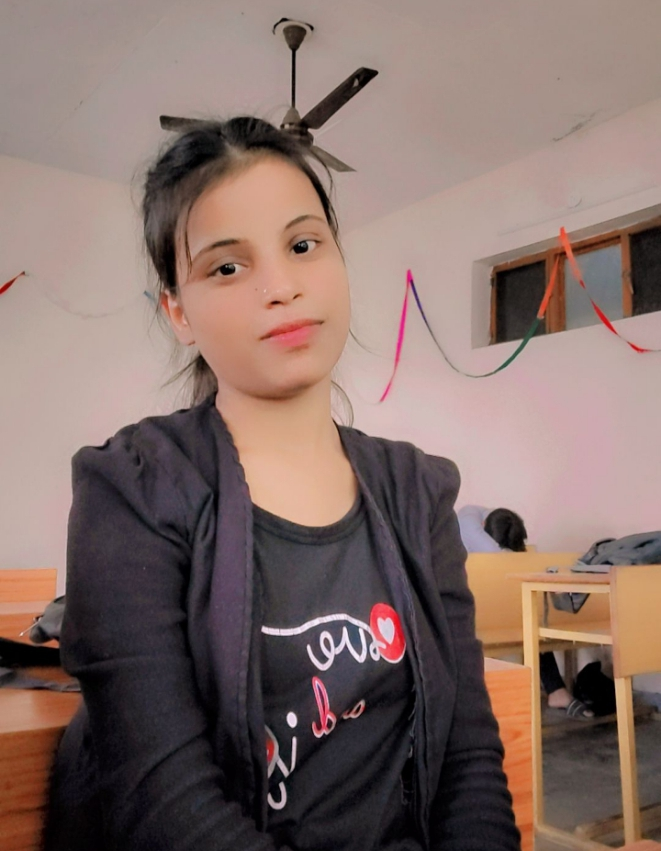

About Me

Hi, I'm Pooja Yadav, a Computer Science undergraduate currently in my 3rd semester. I'm an aspiring Software Developer with a strong interest in Web Development and Data Structures & Algorithms.
I'm currently building my skills in C++ problem-solving and creating interactive web projects using HTML, CSS, JavaScript, and React. I've also explored hackathons and internships, which helped me apply my learning in real-world projects.
My key areas of focus right now:
- Strengthening DSA for coding interviews
- Developing modern, user-friendly web applications
- Exploring backend technologies for full-stack development
I enjoy learning by building, collaborating, and experimenting with new technologies. My long-term goal is to become a skilled software engineer who contributes to impactful projects.